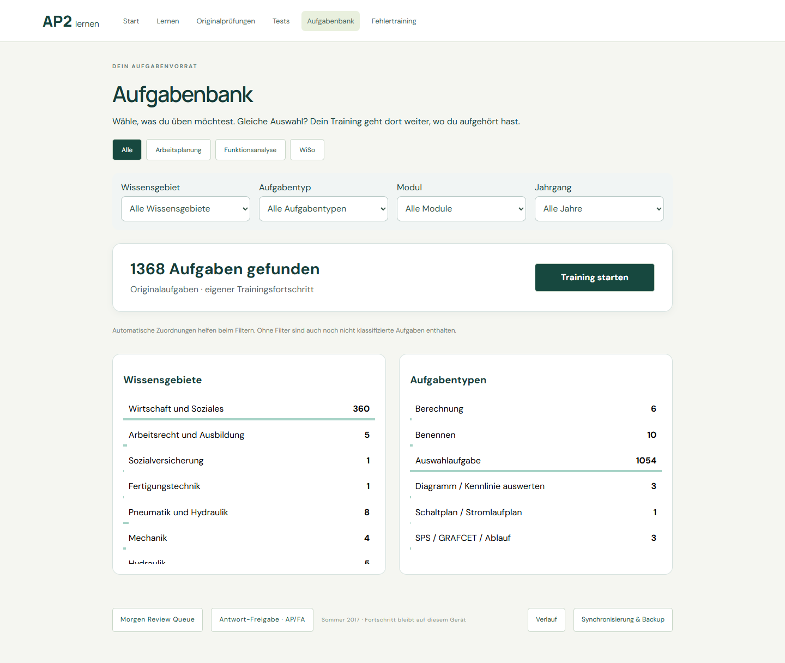
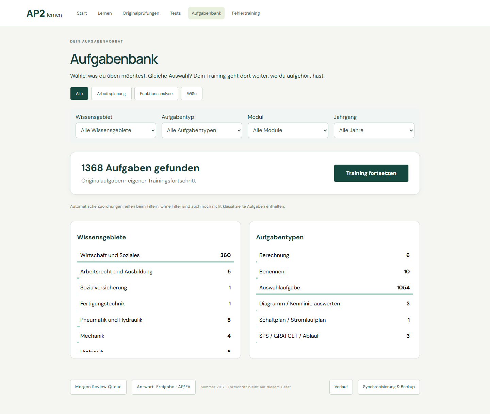
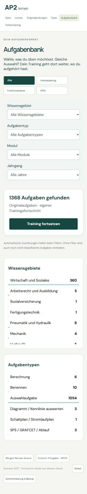

Weiße Karte, größere Aufgabenanzahl und deutlich sichtbarer Start-/Fortsetzen-Button. Desktop: Information links, Aktion rechts. Mobil: untereinander mit breiter Schaltfläche.
Filter, Zählung, Training Key und Fortsetzen bleiben unverändert. Prüfung in isolierten Browserprofilen; keine Änderungen an persönlichen Nutzerdaten.
Aufgabenbank öffnen · Browser-Prüfung · Ergebnis der Quellenprüfung
题库现为 1,368 题：Sommer 2024 FA 新增 36 题，附件只关联 U3。Winter 2024/25 FA 附件归属已解决，新增 17 道官方答案需人工核验，尚未上线。
Sommer 2018 AP/FA 缺页与 Sommer 2023 FA 手写作答的使用许可已记录；这些模块仍需完成题目或答案提取，不能直接标为已上线。Sommer 2023 WiSo 暂留空，Sommer 2025 等待原始材料。


